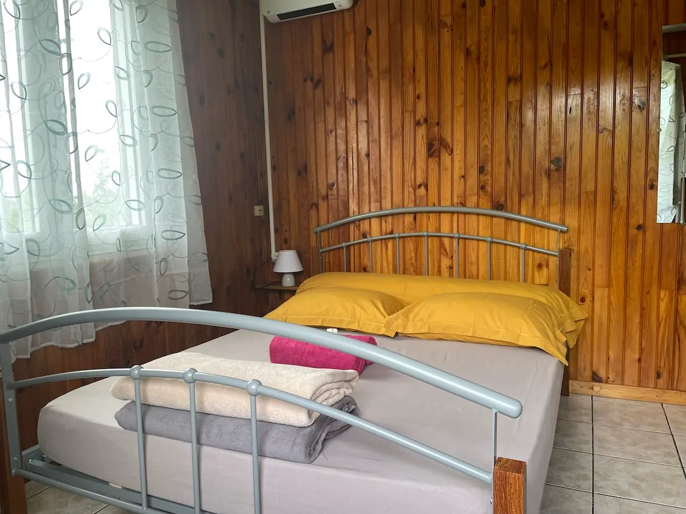
Chambres 1 et 2
Un lit double et un lit superposé dans chacune, une armoire et le chauffage.
Gîte rural · La Plaine des Cafres · Le Tampon
Une kaz qui allie modernité et confort au centre de l'île, dans une nature verdoyante, avec une magnifique vue sur le Piton des Neiges et un clin d'œil sur la mer.
L'esprit du lieu
Le Placide est fait pour vous. Une maison meublée et équipée pour réunir familles et amis, à proximité de la Maison du Volcan et des départs de différentes randonnées, en plein cœur des Hauts.
« Le Placide c'est pour un séjour au calme, dans un cadre de douceur et de détente. »Le Placide, sur sa fiche reunion.fr
Ici, la soirée se vit en douceur : un fond musical, le crépitement de la cheminée, et le grand silence des Hauts.
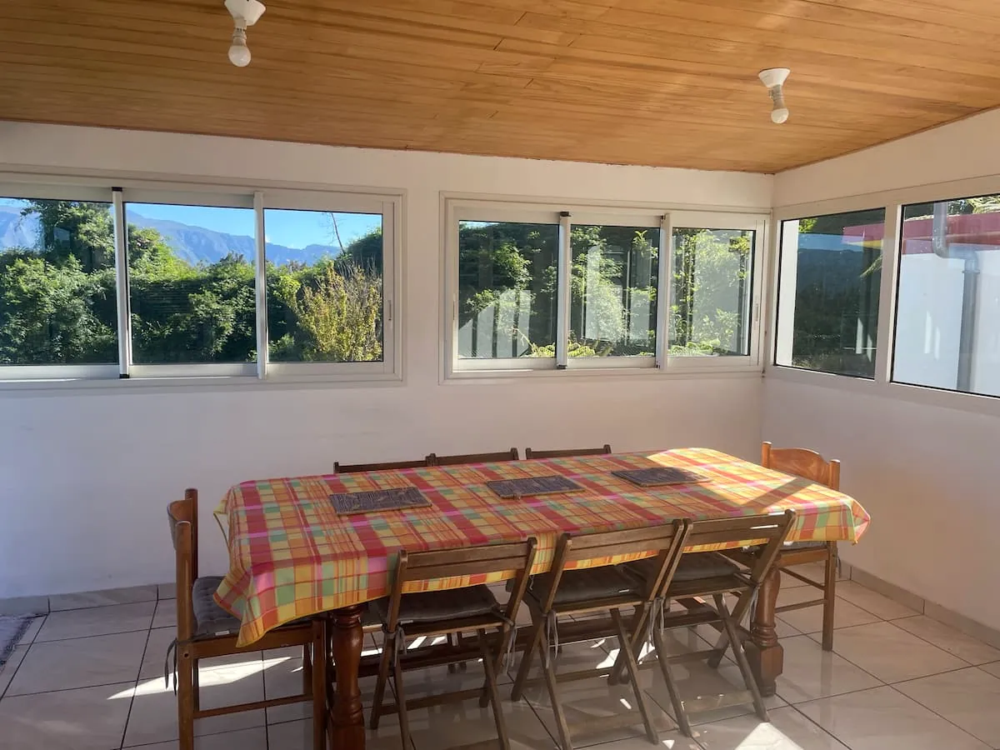
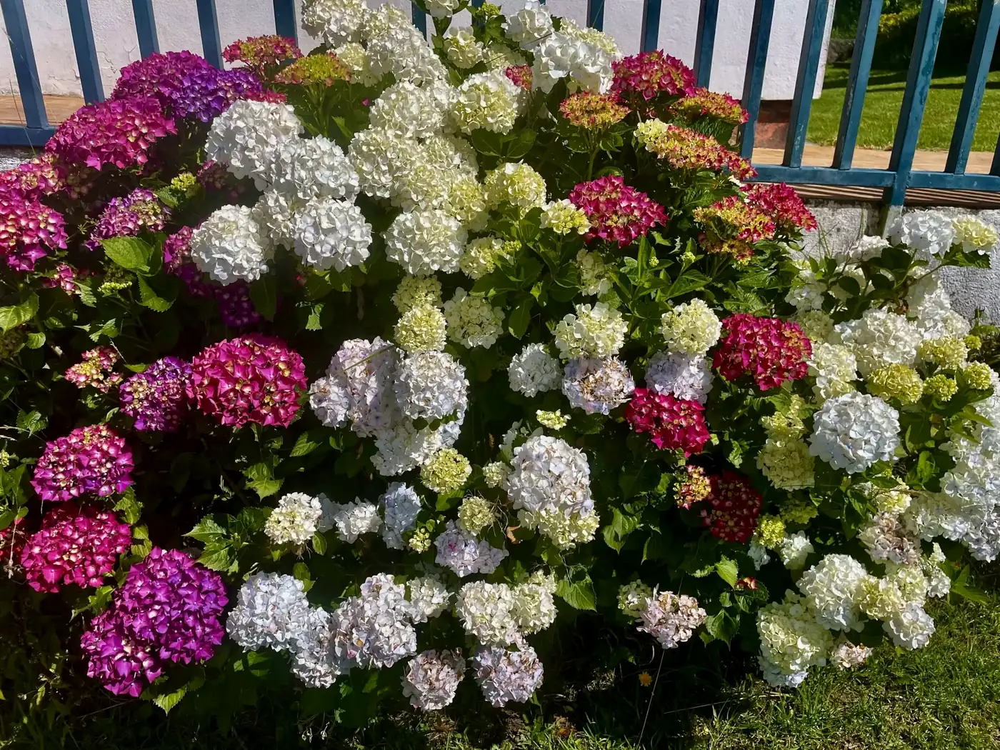
La maison
Meublé et équipé, avec le chauffage dans chaque chambre et une cheminée opérationnelle pour les soirées fraîches de la Plaine des Cafres.

Un lit double et un lit superposé dans chacune, une armoire et le chauffage.
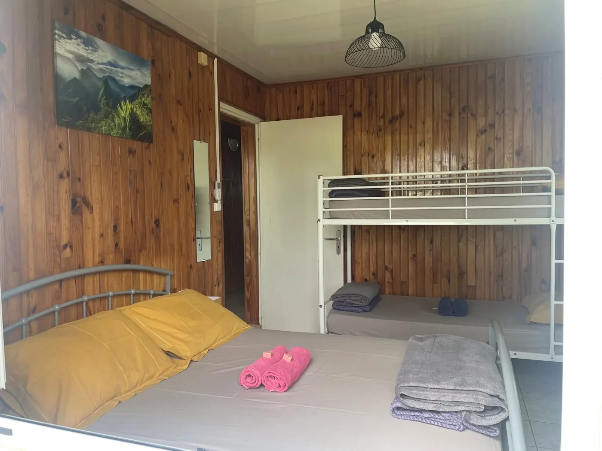
Deux lits superposés, idéale pour la bande des enfants.
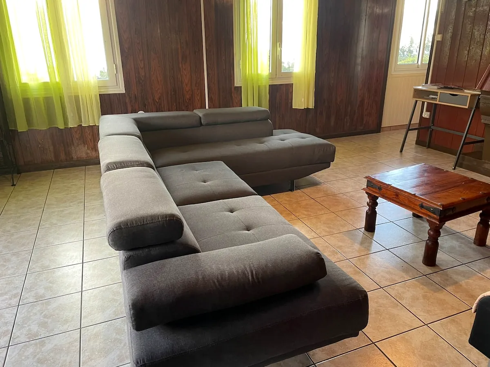
Un canapé convertible et un canapé pour se retrouver au coin du feu.
En images
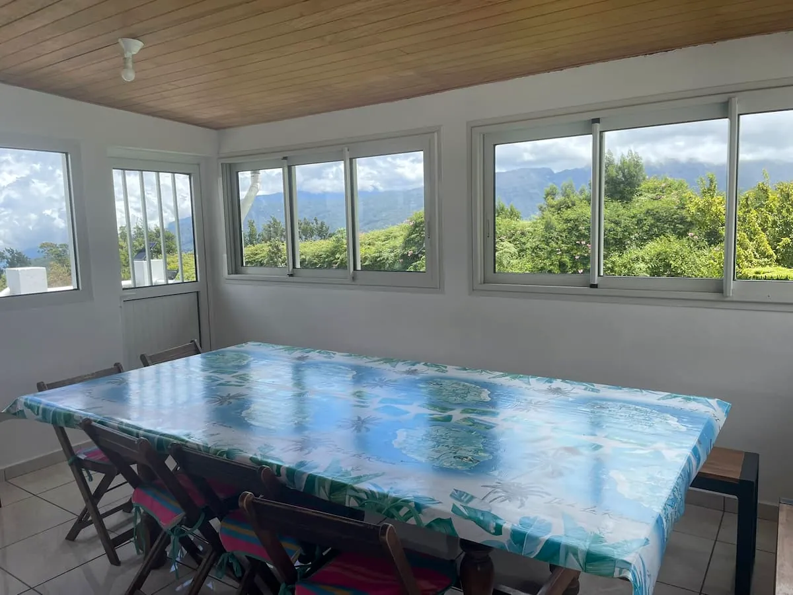
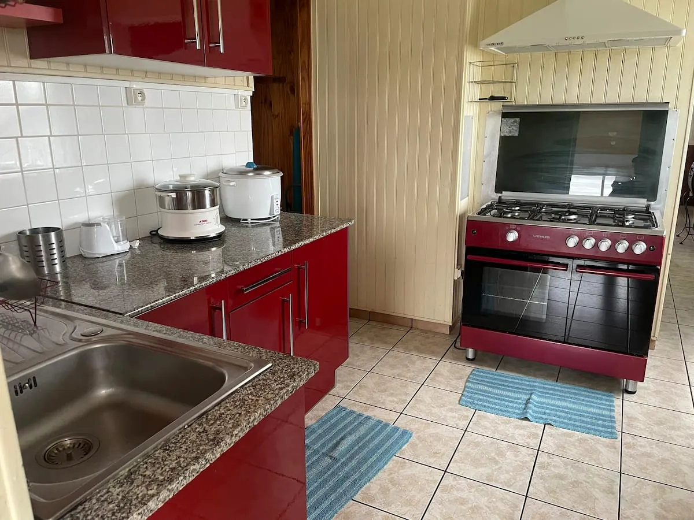
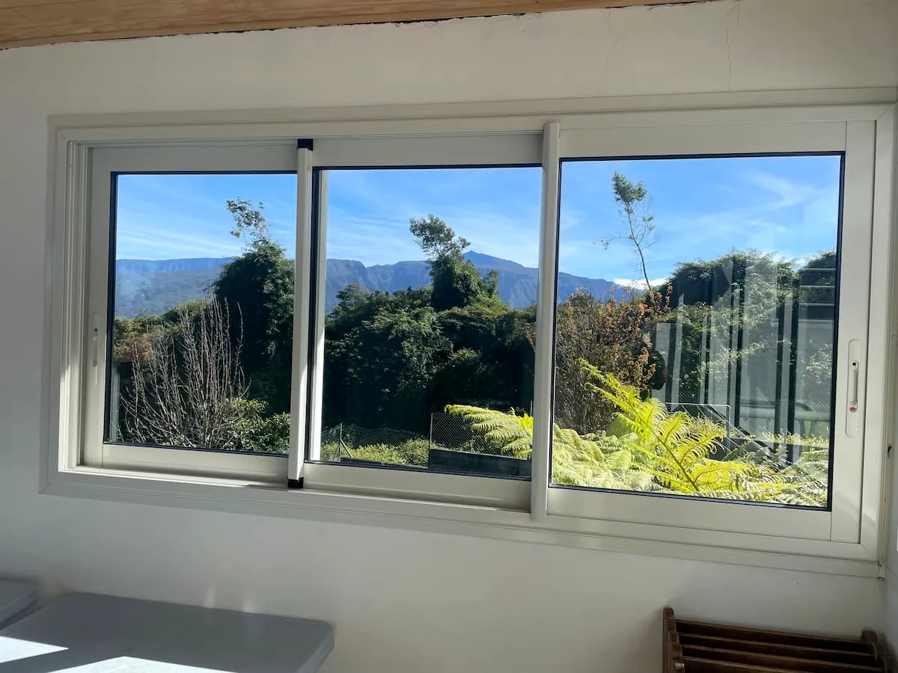
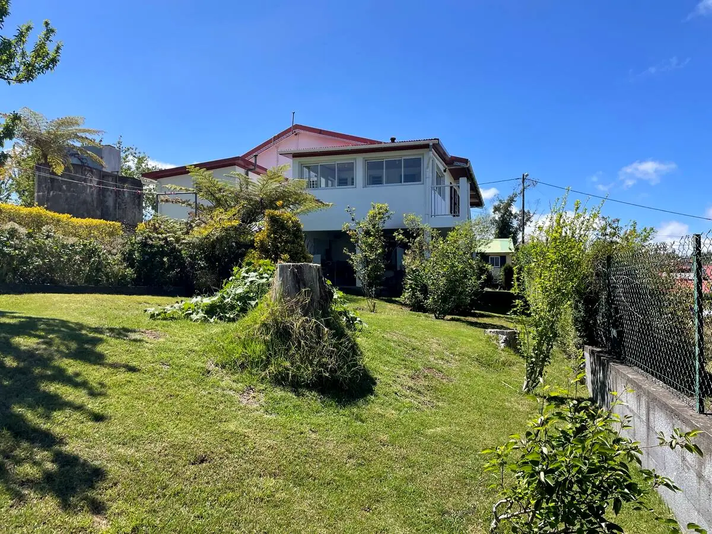
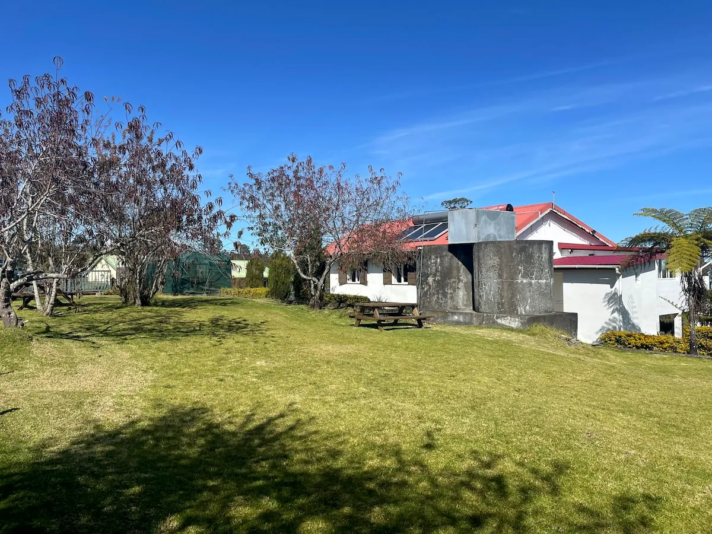
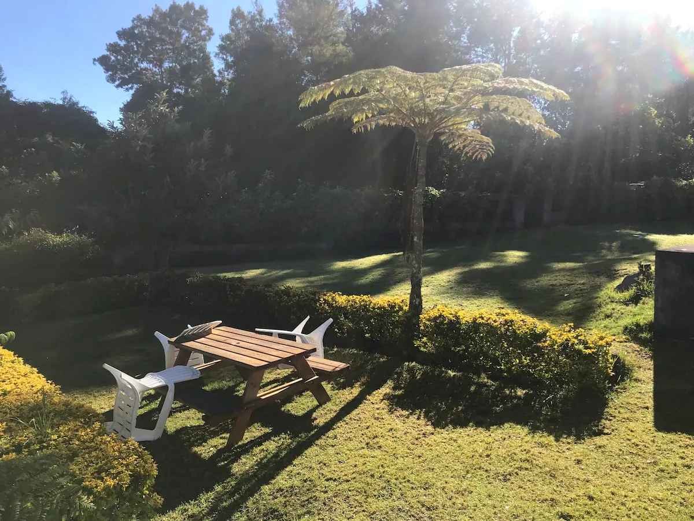
Faites glisser pour continuer la visite →
Dehors
Un jardin privé clôturé, des repas à l'intérieur comme à l'extérieur, et toute la place pour que chacun trouve son coin.
Autour du Placide
Un très bon point de départ pour monter vers le toit de l'île, avec sa vue depuis la maison.
La Maison du Volcan à proximité, pour préparer la montée au Piton de la Fournaise.
Une des balades conseillées par Alain, à faire en famille ou en solo.
Un parcours sportif pour se dégourdir, et un arrêt de bus à 500 m.
Ils y ont séjourné
sur 132 commentaires de voyageurs Airbnb
« Les voyageurs font l'éloge de l'accueil chaleureux d'Alain, de ses conseils locaux sur les randonnées et les restaurants, ainsi que de sa flexibilité concernant les heures d'arrivée. »Synthèse des commentaires, annonce Airbnb du Placide
Des nouvelles du Placide
« Et si vous troquiez l'agitation du littoral pour la douceur des Hauts ? Le Placide vous invite à une escale hors du temps, là où l'air est plus pur et le silence plus profond. »
« Le Placide est encore disponible pour un week-end au calme. »
« Merci à tous ceux qui sont passés par le Placide et aux autres qui vont venir, l'aventure continue. »
Tarifs 2026
Linge de maison inclus · tarifs publiés sur la fiche reunion.fr du Placide
Offrir pour Noël
Un week-end au Placide pour réunir la famille autour de la cheminée, ou une escale hors du temps à glisser sous le sapin : écrivez à Alain pour imaginer ensemble le cadeau qui fera plaisir.
Réserver